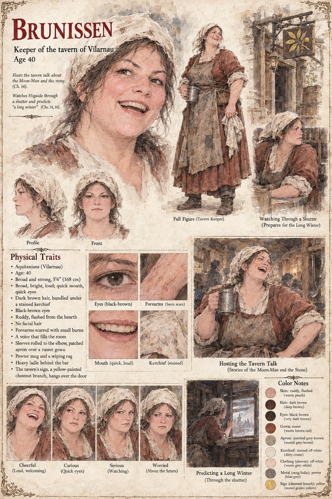

Brunissen
Keeper of the tavern of Vilarnau · 40 years old
A broad, bright-faced, loud-voiced woman of forty, who sells a thin bitter ale and a thinner red wine under a crooked chestnut-branch sign painted yellow in her father's time, and who has never in twenty years allowed a silence to last more than a minute. It is she who asks, wiping a mug on her apron, where the stone goes if it is a door. On the sleet-ticking evening when the lane votes to take its grain to a plank under the oak and keep the green's stone clear for its guest, hers is one of the two hands that stay in a lap, because she does not vote on anything she will have to serve drinks through afterward.
Through a crack in her shutter she watches the foreigner lay his hand on the polished stone in the sleet, and says, to no one, in a very quiet voice, that it is going to be a long winter. She is correct on every point but the length. After the burning she carries her father's sign up the quarry road, scorched along one edge, and hangs it in the second spring on the door of the largest house on the path. She keeps a tavern there for thirty years and never again allows a silence to last a minute. Nobody asks her why.